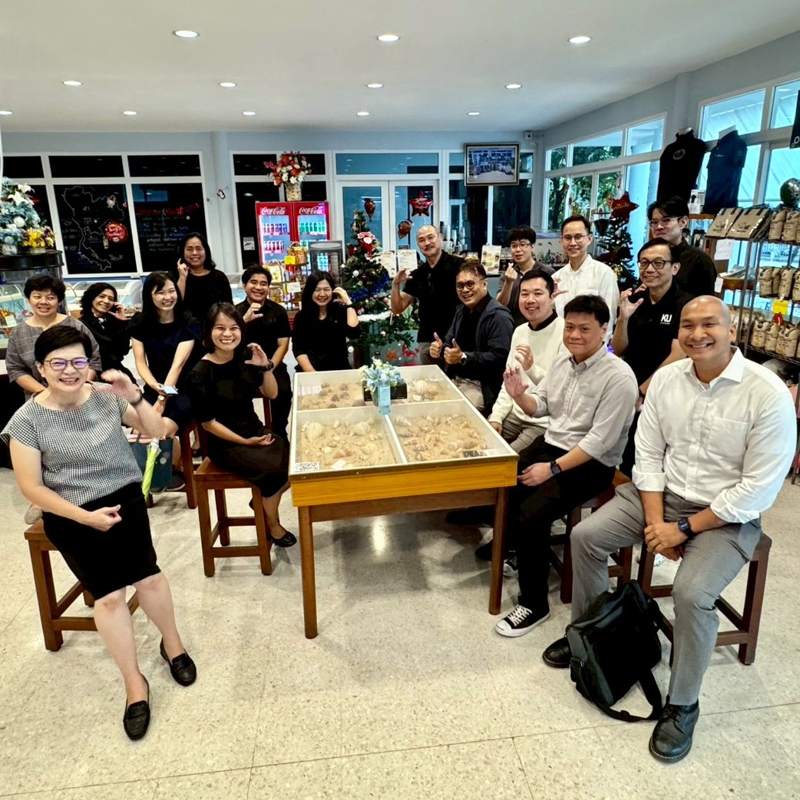

AI-Integrated Fisheries ไม่ใช่ของเล่น แต่เป็น survival strategy ของงานประมงยุคใหม่
{kind=link}

บทความนี้เริ่มจากภาพง่าย ๆ แต่ทรงพลังมาก คือภาพที่ อาจารย์ประมงกับอาจารย์ AI นั่งโต๊ะเดียวกัน ซึ่งผู้เขียนมองว่าไม่ใช่แค่การหารือความร่วมมือทั่วไป แต่คือภาพอนาคตของระบบประมงทั้งระบบในโลกที่การตัดสินใจต้องอาศัยข้อมูลและการคาดการณ์มากขึ้นเรื่อย ๆ
ผู้เขียนย้ำอย่างชัดเจนว่า AI-Integrated Fisheries ไม่ใช่ของเล่น และไม่ใช่การติด AI เป็นของแต่งให้หลักสูตรดูทันสมัย แต่เป็น survival strategy ของอุตสาหกรรมที่ต้องรับมือทั้งทรัพยากรทางทะเลที่ลดลง ต้นทุนที่กดดัน สภาพอากาศที่แปรปรวน และกฎด้าน traceability ที่เข้มขึ้นทุกปี
จุดแข็งของโพสต์นี้คือการวางกรอบ AI ให้เป็นเครื่องมือสร้าง วิสัยทัศน์ที่ชาญฉลาด ผ่านข้อมูลจริง ตั้งแต่ข้อมูลฟาร์มแบบ real-time น้ำหนักและการเติบโตของสัตว์น้ำ คุณภาพน้ำจากเซนเซอร์ ภาพดาวเทียม กล้องใต้น้ำ ข้อมูลการเดินเรือ ไปจนถึงโมเดลคาดการณ์น้ำ อากาศ และความเสี่ยง
AI x ประมง คือการยกระดับฐานรากของศาสตร์ ไม่ใช่การแทนที่มัน
สิ่งที่บทความนี้วางไว้ชัดมากคือ AI ไม่ได้มาแทนวิทยาศาสตร์ประมง แต่ทำให้คนเรียนประมงสามารถ อ่านเกมผ่านข้อมูล และตัดสินใจได้แม่นขึ้นอย่างมีเหตุผลรองรับ
แนวคิด “ปริญญาตรีประมงเดิม + โมดูล AI” จึงมีความหมายมาก เพราะมันรักษาแกนของ domain knowledge เอาไว้ แล้วเพิ่มความสามารถใหม่ที่จำเป็นต่อโลกการทำงานจริงโดยไม่ทำให้สาขาหลักสูญเสียตัวตน
ตรี+1 ทำให้ AI ไม่ใช่แค่รายวิชาเพิ่ม แต่เป็นเส้นทางวิชาชีพใหม่
โพสต์นี้เชื่อมการพัฒนาระดับปริญญาตรีเข้ากับเส้นทางปริญญาโทแบบ ตรี+1 ภายใต้กรอบ AI-Integrated Engineering ทำให้ผู้เรียนที่พร้อมสามารถต่อยอดไปสู่ระดับที่สูงขึ้นได้ทันที โดยไม่ต้องเริ่มต้นใหม่แบบกระจัดกระจาย
มุมนี้ทำให้ AIEP ในภาคประมงไม่ได้เป็นแค่การ upskill ระยะสั้น แต่เป็น pathway เต็มรูปแบบสำหรับสร้าง “นักประมงที่คิดบนข้อมูลได้อย่างเต็มรูปแบบ” ซึ่งเป็นนิยามของกำลังคนยุคใหม่ในสาขานี้
เป้าหมายไม่ใช่นักวิทยาศาสตร์ประมงแบบเดิม แต่คือ Data-driven Fishery Professional
หนึ่งในจุดที่น่าสนใจที่สุดของบทความคือการวาดภาพเส้นทางอาชีพออกมาอย่างเป็นรูปธรรม ตั้งแต่วิศวกรข้อมูลที่เข้าใจประมง นักวิทยาศาสตร์ข้อมูลด้านทรัพยากรน้ำ ผู้เชี่ยวชาญ smart aquaculture ไปจนถึงนักวิเคราะห์นโยบายบนฐานข้อมูล
สิ่งนี้สะท้อนว่าการบูรณาการ AI กับ domain ไม่ได้เปลี่ยนแค่หลักสูตร แต่เปลี่ยนฐานความเป็นไปได้ของอาชีพ และทำให้บัณฑิตมีบทบาทใหม่ที่กว้างขึ้นมากในทั้งสายประมง สิ่งแวดล้อม อุตสาหกรรม และนโยบาย
เมื่อคณะประมงพร้อมมาก AIEP ก็มีโอกาสกลายเป็นโมเดลที่แข็งแรงจริง
ช่วงท้ายของโพสต์มีนัยสำคัญ เพราะผู้เขียนระบุชัดว่าคณะประมง “พร้อมมาก” และมองอนาคตได้ชัด ทำให้ความร่วมมือครั้งนี้ไม่ได้เริ่มจากความจำเป็นเชิงเอกสาร แต่เริ่มจาก ความพร้อมทางวิสัยทัศน์ ของทั้งสองฝ่าย
นั่นทำให้ AI-Integrated Fisheries มีโอกาสกลายเป็นหนึ่งในโมเดลที่แข็งแรงที่สุดของ AIEP เพราะมันยืนอยู่บนทั้งปัญหาจริงของอุตสาหกรรมและศักยภาพดั้งเดิมของคณะประมงในเวลาเดียวกัน